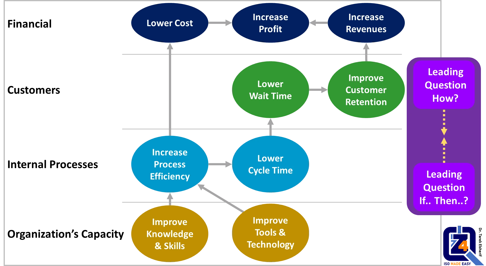

Strategic Planning

What is Strategic Planning?
Strategic planning is an organizational management activity that is used to set priorities, focus energy and resources, strengthen operations, ensure that employees and other stakeholders are working toward common goals, establish agreement around intended outcomes/results, and assess and adjust the organization’s direction in response to a changing environment.
Strategic planning is a disciplined effort that produces fundamental decisions and actions that shape and guide what an organization is, who it serves, what it does, and why it does it, with a focus on the future.
Effective strategic planning articulates not only where an organization is going and the actions needed to make progress, but also how it will know if it is successful.
What is a Strategic Plan?
A atrategic plan is a document used to communicate within the organization, the organizations goals, the actions needed to achieve those goals, and all of the other critical elements developed during the planning exercise.
What is Strategic Management? What is Strategy Execution?
Strategic management is the comprehensive collection of ongoing activities and processes that organizations use to systematically coordinate and align resources and actions with mission, vision and strategy, throughout an organization.
Strategic management activities transform the static plan into a system that provides strategic performance feedback to decision making, and enables the plan to evolve and grow as requirements and other circumstances change.
Strategic execution is basically synonymous with Strategy Management and amounts to the systematic implementation of a strategy.
What Are the Steps in Strategic Planning & Management?
There are many different frameworks and methodologies for strategic planning and management. While there are no absolute rules regarding the right framework, most follow a similar pattern, and have common attributes.
Many frameworks cycle through some variation on some very basic phases:
- Analysis or assessment, where an understanding of the current internal and external environments is developed;
- Strategic formulation, where high level strategy is developed and a basic organization level strategic plan is documented;
- Strategy execution, where the high-level plan is translated into more operational planning and action items, and;
- Evaluation or sustainment/management phase, where ongoing refinement and evaluation of performance, culture, communications, data reporting, and other strategic management issues occurs.
What is a Strategy Map?
An example of a strategic map.
A strategic map is a simple graphic that shows a logical, cause-and-effect connection between strategic objectives (shown as ovals on the map).
It is one of the most powerful tools, as it is used to quickly communicate how value is created by the organization.
Strategic mapping can vastly improve any strategy communication effort. Most people are visual learners and so a picture of your strategy will be understood by many more employees than a written narrative.
Plus, the process of developing a strategy map forces the team to agree on what they are trying to accomplish in simple, easy-to-understand terms. With a well-designed strategy map, every employee can see how they contribute to the achievement of the organization’s objectives.
For more information about strategic planning and management in general or for about how strategic planning can help you, please contact us directly at at support@the4z.com.
If you want to start right away with the adoption of strategic planning, don't hesitate, email us at today at:
support@the4z.com
Strategic planning is not difficult, but if it seems so to you, we promise to make it easy.
Call 4Z for Quality today at:
+973 3399 5807.
(also on WhatsApp)